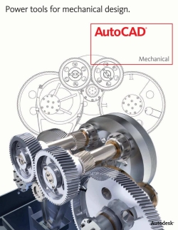
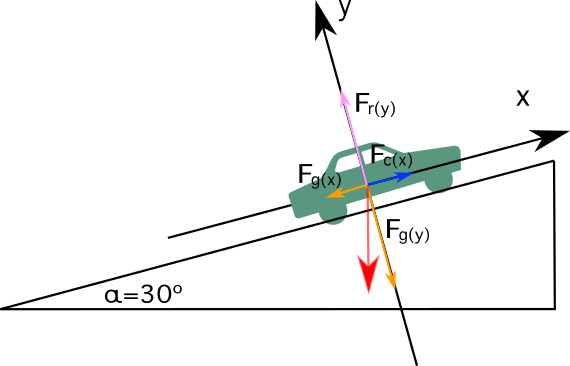

1. Introduccion a la Fisica Mecanica#
1.1. La historia y las limitaciones de la mecánica clásica#
La mecánica clásica es la ciencia matemática que estudia el desplazamiento de los cuerpos bajo la acción de fuerzas. Galileo Galilei inició la era moderna de la mecánica al utilizar las matemáticas para describir el movimiento de los cuerpos. Su obra Mecánica, publicada en 1623, introdujo los conceptos de fuerza y describió el movimiento uniformemente acelerado de los objetos cerca de la superficie de la Tierra. Sesenta años más tarde, Isaac Newton formuló sus Leyes del Movimiento, que publicó en 1687 bajo el título Philosophiae Naturalis Principia Mathematica (Principios matemáticos de la filosofía natural). En el tercer libro, subtitulado De mundi systemate (Sobre el sistema del mundo), Newton resolvió el mayor problema científico de su época al aplicar su Ley de Gravitación Universal para determinar el movimiento de los planetas. Newton estableció un enfoque matemático para el análisis de los fenómenos físicos, en el que sostuvo que no era necesario introducir causas finales (hipótesis) que no tuvieran base experimental, “Hypotheses non fingo” (“no formulo hipótesis”), sino que los modelos físicos debían construirse a partir de observaciones experimentales y luego generalizarse mediante inducción. Esto condujo a un gran siglo de aplicaciones de los principios de la mecánica newtoniana a muchos problemas nuevos, culminando en el trabajo de Leonhard Euler. Euler inició un estudio sistemático del movimiento tridimensional de los cuerpos rígidos, lo que condujo a un conjunto de ecuaciones dinámicas hoy conocidas como las ecuaciones de movimiento de Euler.
Junto con este desarrollo y refinamiento del concepto de fuerza y su aplicación a la descripción del movimiento, el concepto de energía fue emergiendo lentamente, culminando a mediados del siglo XIX con el descubrimiento del principio de conservación de la energía y sus aplicaciones inmediatas a las leyes de la termodinámica. Los principios de conservación son ahora centrales en nuestro estudio de la mecánica; la conservación del momento lineal, la energía y el momento angular permitió una nueva reformulación de la mecánica clásica.
Durante este período, la metodología experimental y las herramientas matemáticas de la mecánica newtoniana se aplicaron a otros sistemas no rígidos de partículas, dando lugar al desarrollo de la mecánica del continuo. Surgieron las teorías de la mecánica de fluidos, la mecánica ondulatoria y el electromagnetismo, lo que condujo al desarrollo de la teoría ondulatoria de la luz. Sin embargo, había muchos aspectos desconcertantes en la teoría ondulatoria de la luz; por ejemplo, ¿se propaga la luz a través de un medio, el “éter”? Una serie de experimentos ópticos, culminando en el experimento de Michelson-Morley en 1887, descartó la hipótesis de un medio estacionario. Se hicieron muchos intentos por reconciliar la evidencia experimental con la mecánica clásica, pero los desafíos eran más fundamentales. Los conceptos básicos de tiempo absoluto y espacio absoluto, que Newton había definido en los Principia, eran por sí mismos inadecuados para explicar una gran cantidad de observaciones experimentales. Albert Einstein, al insistir en una reconsideración fundamental de los conceptos de espacio y tiempo, y de la relatividad del movimiento, en su teoría especial de la relatividad (1905), fue capaz de resolver los aparentes conflictos entre la óptica y la mecánica newtoniana. En particular, la relatividad especial proporciona el marco necesario para describir el movimiento de objetos que se desplazan rápidamente (velocidades mayores que (v > 0.1c)).
Una segunda limitación de la validez de la mecánica newtoniana apareció a escalas microscópicas de longitud. Se desarrolló una nueva teoría, la mecánica estadística, que relacionaba las propiedades microscópicas de los átomos y moléculas individuales con las propiedades termodinámicas macroscópicas o globales de los materiales. Iniciada a mediados del siglo XIX, nuevas observaciones a escalas muy pequeñas revelaron anomalías en el comportamiento predicho de los gases (capacidad calorífica). Fue quedando cada vez más claro que la mecánica clásica no explicaba adecuadamente una amplia gama de fenómenos recientemente descubiertos a escalas atómicas y subatómicas. Una realización esencial fue que el lenguaje de la mecánica clásica ni siquiera era adecuado para describir cualitativamente ciertos fenómenos microscópicos. A comienzos del siglo XX, la mecánica cuántica proporcionó una descripción matemática de los fenómenos microscópicos en completo acuerdo con nuestro conocimiento empírico de todos los fenómenos no relativistas.
En el siglo XX, a medida que las observaciones experimentales condujeron a un conocimiento más detallado de las propiedades a gran escala del universo, la Ley de Gravitación Universal de Newton dejó de modelar con precisión el universo observado y tuvo que ser reemplazada por la relatividad general. A fines del siglo XX y comienzos del siglo XXI, muchas observaciones nuevas, por ejemplo la expansión acelerada del universo, han requerido la introducción de nuevos conceptos como la energía oscura, lo que podría llevar una vez más a una reconsideración fundamental de los conceptos básicos de la física para explicar los fenómenos observados.
Fuente original: MIT OpenCourseWare, 8.01 Classical Mechanics, Spring 2022.
1.2. Mecánica e ingeniería#
La mecánica, como rama de la física, mantiene una estrecha relación con las matemáticas por su rigor formal y su carácter deductivo. No obstante, también se vincula con la ingeniería, aunque desde una perspectiva menos estricta. Ambas miradas son válidas en cierta medida: por un lado, la mecánica constituye uno de los fundamentos esenciales de la ingeniería clásica; por otro, no posee un carácter tan empírico como las disciplinas de la ingeniería, y por ello, por su nivel de abstracción, rigor y estructura lógica, guarda mayor semejanza con la matemática.
{kind=link}

Figura 1.1 Software de diseño 3D aplicado al desarrollo de piezas mecánicas.#
{kind=link}

Figura 1.2 Diagrama de cuerpo libre de una partícula sometida a fuerzas externas.#
1.3. Por que es la primera asignatura en su malla curricular#
La mecanica suele ser la primera experiencia universitaria donde una teoria fisica se convierte en herramienta de modelacion. Aqui no basta con recordar formulas: hay que decidir que sistema observar, que interacciones importan, que aproximaciones son razonables y como justificar el resultado.
1.4. Objetivos de aprendizaje#
Identificar las magnitudes fisicas relevantes de un problema mecanico.
Traducir una situacion verbal a un diagrama, un conjunto de variables y un modelo.
Diferenciar entre cinematica, dinamica y leyes de conservacion.
Reconocer los supuestos que limitan la validez de un modelo.